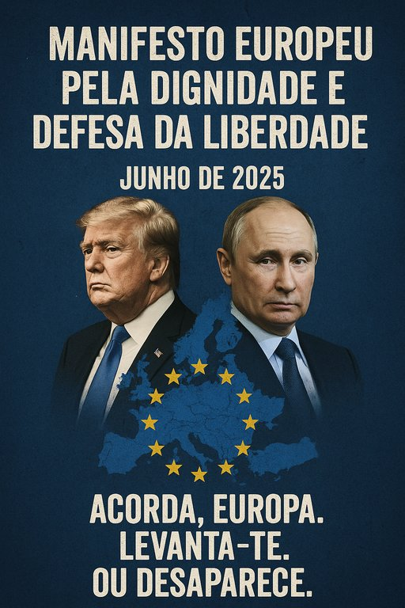

Publicado em 2025-07-05 22:34:31
Junho de 2025
A História chamou. A Europa hesita.
Enquanto o velho continente dorme embalado na ilusão de paz eterna, os tanques voltam a rolar, os pactos desfazem-se, e o terror agita-se no leste, sob a sombra fria de um império ressuscitado.
Donald Trump, no seu delírio de vaidade imperial, decide cortar o apoio à Ucrânia, deixando um povo livre nas garras de um czar moderno sedento de glória e sangue.
Putin observa. Sorri. E prepara o avanço.
Os EUA abandonam. E a Europa? A Europa curva-se?
Não!
Este é o momento da viragem.
É agora — ou nunca — que a Europa deixa de ser um protetorado militar e passa a ser um Poder real, autónomo e consciente do seu papel histórico.
Não se defende a liberdade com flores. Defende-se com lucidez, força estratégica e dignidade.
É a sua apatia.❞
Putin não quer apenas a Ucrânia. Quer a alma da Europa.
Trump não quer apenas um voto. Quer o caos.
É tempo de resistir com coragem, clarividência e ação coordenada.
Porque se a Europa cair, não será com bombas — será com silêncio, com submissão e com medo.
Acorda, Europa.
Levanta-te.
Ou desaparece.
Manifesto criado por Augustus Veritas